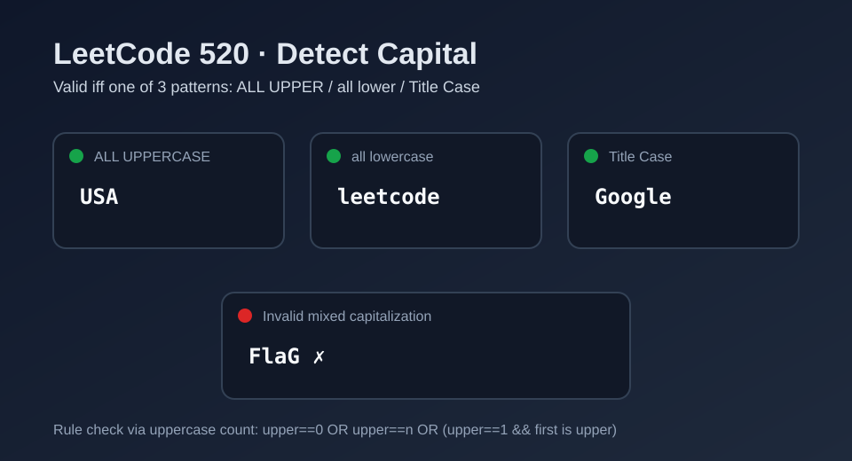

LeetCode 520: Detect Capital (Three Valid Capitalization Patterns)
LeetCode 520StringCapitalizationPattern CheckToday we solve LeetCode 520 - Detect Capital.
Source: https://leetcode.com/problems/detect-capital/

English
Problem Summary
Given a word, return true if its capitalization is correct. Correct means one of these three patterns:
1) all letters are uppercase (e.g., USA)
2) all letters are lowercase (e.g., leetcode)
3) only the first letter is uppercase (e.g., Google)
Key Insight
Only three legal patterns exist, so we can detect them by counting uppercase letters.
Brute Force and Limitations
Trying many regex checks works but is overkill. Counting uppercase letters gives a direct and language-agnostic solution.
Optimal Algorithm Steps
1) Count uppercase letters in word.
2) If uppercase count is 0, valid (all lowercase).
3) If uppercase count equals word length, valid (all uppercase).
4) If uppercase count is 1 and first character is uppercase, valid (title case).
5) Otherwise invalid.
Complexity Analysis
Time: O(n).
Space: O(1).
Common Pitfalls
- Forgetting the single-letter case (always valid).
- Checking only first/last characters instead of full count.
- Confusing lowercase validation with ASCII ranges in some languages.
Reference Implementations (Java / Go / C++ / Python / JavaScript)
class Solution {
public boolean detectCapitalUse(String word) {
int upper = 0;
for (int i = 0; i < word.length(); i++) {
if (Character.isUpperCase(word.charAt(i))) upper++;
}
return upper == 0 || upper == word.length() ||
(upper == 1 && Character.isUpperCase(word.charAt(0)));
}
}func detectCapitalUse(word string) bool {
upper := 0
for i := 0; i < len(word); i++ {
if word[i] >= 'A' && word[i] <= 'Z' {
upper++
}
}
return upper == 0 || upper == len(word) ||
(upper == 1 && word[0] >= 'A' && word[0] <= 'Z')
}class Solution {
public:
bool detectCapitalUse(string word) {
int upper = 0;
for (char c : word) {
if (isupper(static_cast<unsigned char>(c))) upper++;
}
return upper == 0 || upper == (int)word.size() ||
(upper == 1 && isupper(static_cast<unsigned char>(word[0])));
}
};class Solution:
def detectCapitalUse(self, word: str) -> bool:
upper = sum(1 for ch in word if 'A' <= ch <= 'Z')
return upper == 0 or upper == len(word) or (upper == 1 and 'A' <= word[0] <= 'Z')var detectCapitalUse = function(word) {
let upper = 0;
for (const ch of word) {
if (ch >= 'A' && ch <= 'Z') upper++;
}
return upper === 0 || upper === word.length ||
(upper === 1 && word[0] >= 'A' && word[0] <= 'Z');
};中文
题目概述
给定一个单词，判断它的大写使用是否正确。正确格式只可能是三种：
1）全部字母大写（如 USA）
2）全部字母小写（如 leetcode）
3）仅首字母大写（如 Google）
核心思路
合法情况只有三类，所以统计大写字母个数后即可一次性判断。
暴力解法与不足
用多个正则分别匹配虽然能做，但可读性一般、跨语言一致性较差。计数法更直接。
最优算法步骤
1）统计单词中的大写字母数量 upper。
2）若 upper == 0，说明全小写，合法。
3）若 upper == n，说明全大写，合法。
4）若 upper == 1 且首字母大写，说明首字母大写格式，合法。
5）其余情况都不合法。
复杂度分析
时间复杂度：O(n)。
空间复杂度：O(1)。
常见陷阱
- 忽略单字符单词（天然合法）。
- 只看首尾字符，不统计全局大写数。
- 不同语言中大小写判断 API/字符范围处理不一致。
多语言参考实现（Java / Go / C++ / Python / JavaScript）
class Solution {
public boolean detectCapitalUse(String word) {
int upper = 0;
for (int i = 0; i < word.length(); i++) {
if (Character.isUpperCase(word.charAt(i))) upper++;
}
return upper == 0 || upper == word.length() ||
(upper == 1 && Character.isUpperCase(word.charAt(0)));
}
}func detectCapitalUse(word string) bool {
upper := 0
for i := 0; i < len(word); i++ {
if word[i] >= 'A' && word[i] <= 'Z' {
upper++
}
}
return upper == 0 || upper == len(word) ||
(upper == 1 && word[0] >= 'A' && word[0] <= 'Z')
}class Solution {
public:
bool detectCapitalUse(string word) {
int upper = 0;
for (char c : word) {
if (isupper(static_cast<unsigned char>(c))) upper++;
}
return upper == 0 || upper == (int)word.size() ||
(upper == 1 && isupper(static_cast<unsigned char>(word[0])));
}
};class Solution:
def detectCapitalUse(self, word: str) -> bool:
upper = sum(1 for ch in word if 'A' <= ch <= 'Z')
return upper == 0 or upper == len(word) or (upper == 1 and 'A' <= word[0] <= 'Z')var detectCapitalUse = function(word) {
let upper = 0;
for (const ch of word) {
if (ch >= 'A' && ch <= 'Z') upper++;
}
return upper === 0 || upper === word.length ||
(upper === 1 && word[0] >= 'A' && word[0] <= 'Z');
};
Comments